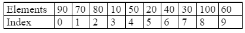
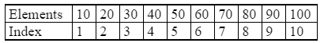

This is the simplest of all searching techniques. In this technique, an ordered or unordered list will be searched one by one from the beginning until the desired element is found. If the desired element is found in the list then the search is successful otherwise unsuccessful.
Suppose we have the following unsorted list.
Searching different elements is as follows.
The binary search approach is different from the linear search. The binary search technique is used to search for a particular element in a sorted array or list. In this technique, two partitions of lists are made and then the given element is searched and hence, it is known as binary search.
ExampleSuppose we have the following sorted list.
The number of comparisons required for searching different elements is as follows.
If we are searching for x = 20: (This needs 2 comparisons)
low = 1, high = 10, mid = 11/2 = 5, check 50
low = 1, high = 4, mid = 5/2 = 2, check 20,found
If we are searching for x = 80: (This needs 2 comparisons)
low = 1, high = 10, mid = 11/2 = 5, check 50
low = 6, high = 10, mid = 16/2 = 8, check 80,found